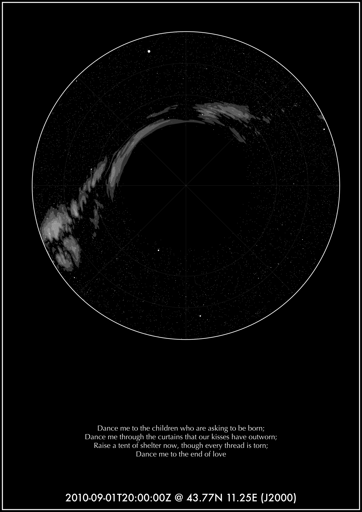
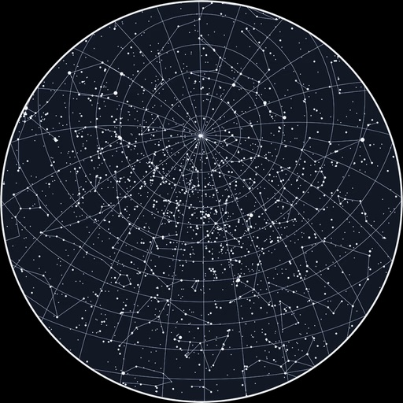
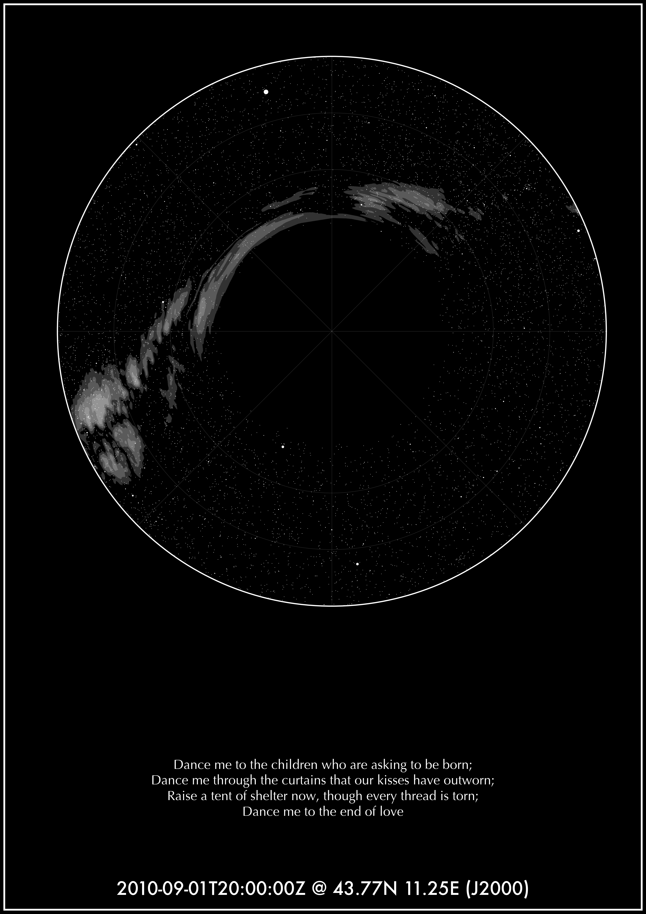
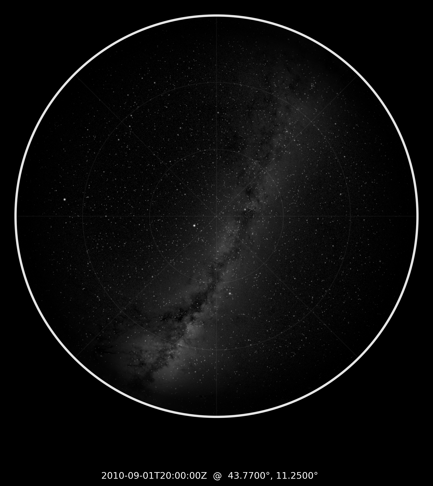
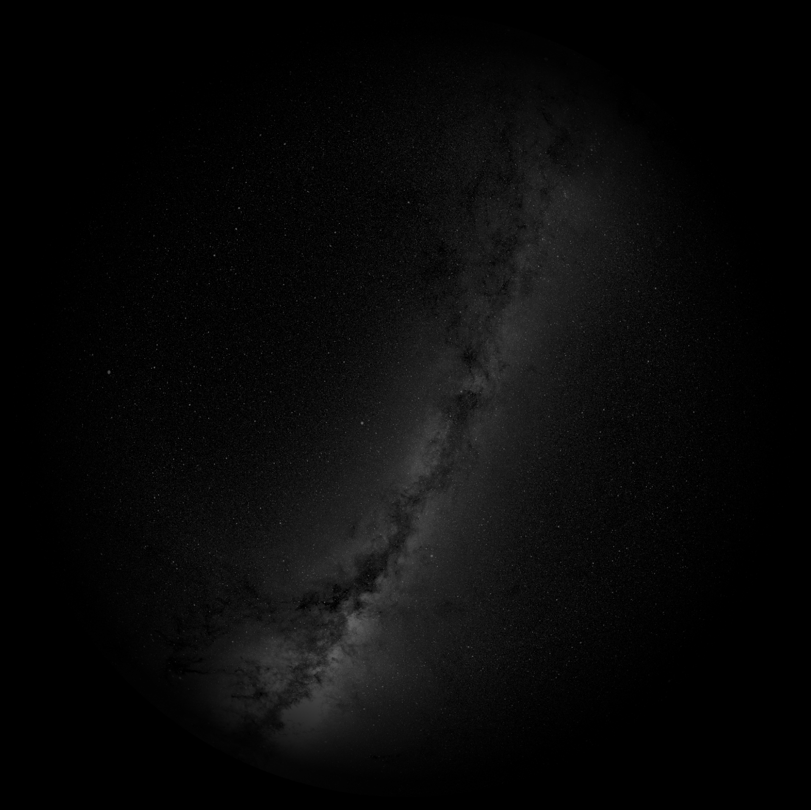
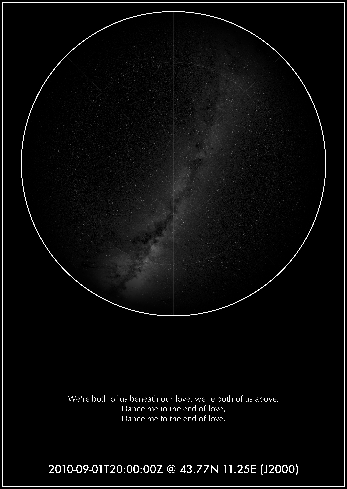
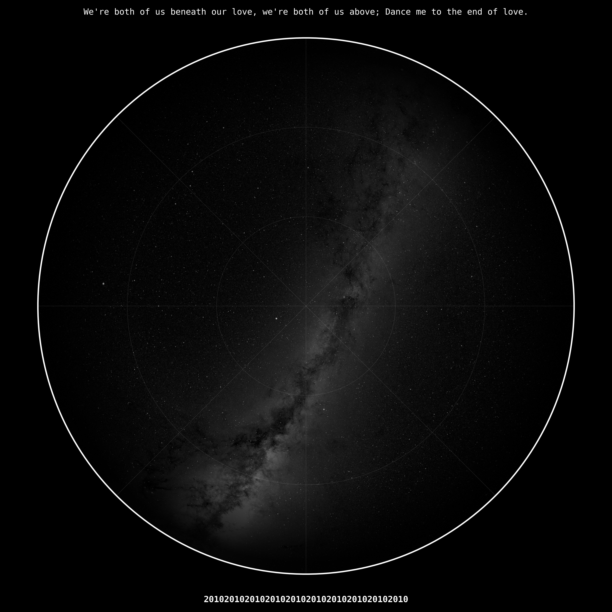
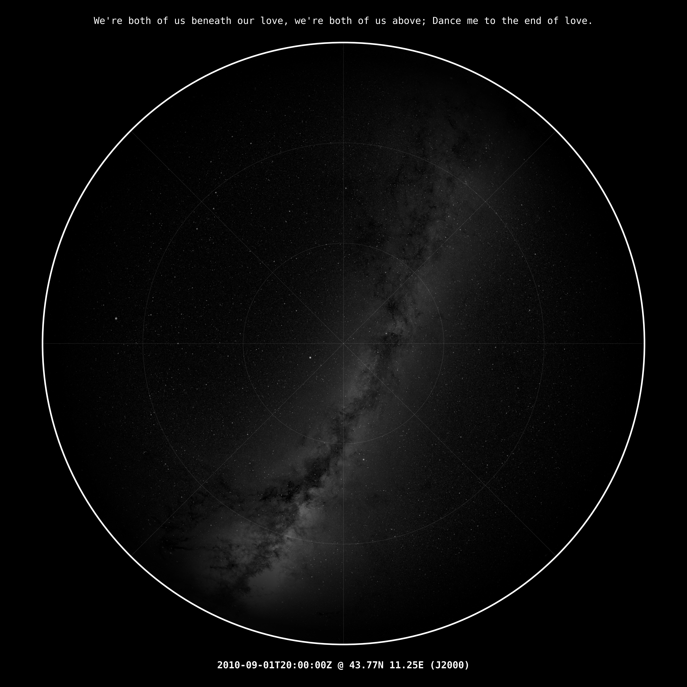

I wanted one honest image: the sky from one exact place, at one exact instant,
tied to our memory of Leonard Cohen in Piazza Santa Croce. I started by studying
commercial star-map products, then built my own physically grounded version.
This page starts with the research I did, then tells how I built the final poster.
Chosen spacetime pin:
2010-09-01T20:00:00Z @ 43.77N 11.25E (J2000)
Converted to local Florence time (Europe/Rome): 2010-09-01 22:00 CEST,
about 45 minutes after the concert start at 21:15.
Literature Review I - How To Identify One Point In Spacetime
What is minimally necessary
A physically meaningful sky "pin" needs three ingredients: exact time, exact observer location,
and a reference frame. I used an ISO-like UTC timestamp with a trailing Z, geographic latitude/longitude,
and an astronomical frame label (J2000).
For astronomy, this works because the observed sky (altitude/azimuth) depends on observer latitude and local hour angle;
so if time or location changes, the sky map changes.
From "Earth pin" to "universal pin"
For this gift, an Earth-based pin is exactly what I needed. But I also reviewed how astronomy goes beyond Earth-centric notation:
ICRF (quasar-based inertial frame), Solar-System barycentric framing, and the Voyager pulsar-map concept for universal localization.
So this project intentionally uses a human/terrestrial pin (because the memory is terrestrial),
while still respecting professional astronomical standards.
My very first step was reviewing commercially available star-map styles.
They are often elegant visually, but usually generic from a physics standpoint:
no explicit observer coordinates, no strict timestamp in UTC, no clear frame declaration,
and no transparent planetary ephemerides.
That is perfect for decoration, but not enough for a true "this was our sky at that instant" poster.
My first in-house attempt: vector Milky Way
After that benchmark, I built my own vector-style Milky Way layer. In theory vectors are elegant and resolution-independent.
In practice, long polygon segments in sky coordinates can misbehave after projection (RA wrap, pole behavior, and ring closure),
creating artificial wedges or bridges.
The full render below shows the kind of artifact I needed to eliminate.
The approach that fixed it
I moved to a full-sky intensity map approach and reprojected it onto the local observing dome.
The source I used is NASA SVS "Deep Star Maps 2020" (OpenEXR all-sky products).
This avoids polygon-topology artifacts and preserves a realistic Milky Way structure.
Embedded provenance in my output PNG metadata: Milky Way Image: From NASA's Scientific Visualization Studio (SVS) "Deep Star Maps 2020". Source: https://svs.gsfc.nasa.gov/4851

Full render of my early vector Milky Way attempt (navy_star_map_WRONG.svg).

Commercial reference style: visually clean, but physically generic.My physically reprojected Milky Way layer (observer/time dependent).
1) Starting point: commercial references, then first own drafts
January 22, 2026 - early afternoon
I began from commercially available visual references, identified what felt physically generic,
and then moved to my first own drafts to lock mood and composition.
Useful first pass, but still wrong in geometry and scientific fidelity.

Early draft stage.
2) Sky realism baseline
January 22, 2026 - afternoon
I then focused on physical consistency: horizon filtering, realistic star magnitudes,
and first stable Milky Way reprojection.
Milky Way-only test layer.

Baseline realistic sky output.
3) Printable A2 composition
January 22, 2026 - late afternoon
After the sky model was stable, I built the A2 poster with quote, title, border, and balanced typography.

A2 Milky Way layer.

A2 full poster.
4) Square redesign + final polish
January 23, 2026
Final phase: square format, spacing corrections, monofix typography choice, and high-resolution export.

18x18 high-resolution export.

Final square poster.
Final Result
Final poster file: assets/img/poster_square.png (5400 x 5400).